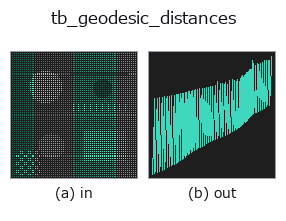

typed op• 데이터 종류: points → signal
• 호출: fullseye.apply(img, "tb_geodesic_distances", a=0.5, b=0.5)(2-D 는 이미지 1 장 + 스칼라 노브 2 개 a,b∈[0,1] 모델)

*그림은 128×128 합성 입력에서 실제로 실행한 출력. 왼쪽이 입력, 오른쪽이 출력. 점군은 위에서 본 산점도(밝기 = z), 1-D 열은 꺾은선, 볼륨은 z 방향 최대값 투영, 동영상은 가운데 프레임, 복소 영상은 진폭이며, 그림이 되지 않는 반환값은 값 자체를 표시한다.*
노브 a 를 훑기(0.1 / 0.5 / 0.9, 다른 노브는 기본값):
▸ tb_geodesic_distances: 노브 a 스윕 (문서 사이트)
*노브 b 는 출력을 바꾸지 않는다(실측: 0.1 / 0.5 / 0.9에서 동일).*
단계(앞에 오는 op → 이 op, 왼쪽에서 오른쪽으로):
▸ tb_geodesic_distances: 단계 (문서 사이트)
다른 영상에서도(합성 장면 / 사진 / 동전. 윗줄이 입력, 아랫줄이 그 출력. 노브는 기본값):
▸ tb_geodesic_distances: 다른 입력 이미지 (문서 사이트)
source에서 모든 점까지의 측지 거리(kNN 그래프 상의 Dijkstra). → (N,) float(도달 불가는 inf).
knn_graph(points, k)로 만든 k 근방 그래프(변의 가중치 = 점 간 Euclid 거리 = 현 길이)를 directed=False로 무향화하고, scipy.sparse.csgraph.dijkstra로 단일 시점 최단 경로를 푼다. d[i]는 source에서 점 i까지의 그래프 위 경로 길이로 d[source] = 0, source와 이어지지 않은연결 성분의 점은 inf. 단위는 좌표의 단위 그대로.
• points: (N,3)의 점군(float64로 변환).
• source: 시점의 첨자(0..N-1의 정수. 범위 밖은 scipy 쪽에서 예외).
• k: 근방 수(기본값 8). 작으면 그래프가 분단되어 inf가 늘고, 크면 떨어진 면끼리를직결하는 "지름길"이 생겨 곡면을 따르지 않는 거리가 된다(얇은 판의 앞뒤, 접힌 면 등).
정밀도: 변이 현 길이이므로 호를 약간 과소평가하는 한편, 경로의 지그재그가 과대평가를 낳는다(모듈 docstring의 Bernstein 등의 협공 평가를 참조). 삼각 메시가 있다면 근방 수에 의존하지 않는 geodesic_mesh를 쓴다. 이 거리로 균등하게 솎아내려면 farthest_point_sampling.
2-D 진화 레지스트리에 연결한 3d op geodesic_distances. 구현은 같고, 호출 규약만 op(v, a, b)에 맞춰 두었다. a가 k(기본값 8)를 바꾼다. b는 사용하지 않는다.
• 샘플 데이터 카탈로그(DL URL / 라이선스) —— 2-D 는 skimage.data(BSD/public)+ 합성, 3-D 는 실데이터 소스(Stanford/PDS 등)의 DL URL.
• 연산자의 내력·참고문헌 —— 이 연산자 족의 바탕이 된 연구/기법의 출처.
아래 프로그램은 실제로 실행됨을 확인했습니다(그림과 같은 입력). Studio 도움말에서는 이 블록이 버튼이 되어 즉시 불러와 실행할 수 있습니다.
img_to_points 0.50 0.50 tb_geodesic_distances 0.50 0.50
아래 예제는 원래의 대장 op geodesic_distances를 호출한다. 이 브리지 op는 같은 구현을 fn(v, a, b) 규약에 맞춘 것뿐이므로 동작은 그대로 적용된다(호출 형식만 다름).
• geodesic_distance — py -3.11 examples_3d/geodesic_distance.py
signal 를 입력으로 받는 것)identity · tb_create_funct_1d_array · tb_smooth_funct_1d_gauss · tb_smooth_funct_1d_mean · tb_derivate_funct_1d · tb_integrate_funct_1d · tb_zero_crossings_funct_1d · tb_abs_funct_1d
typed)tb_points_to_voxel · tb_estimate_point_normals · tb_iss_keypoints · tb_project_points · tb_render_point_depth · tb_statistical_outlier_removal · tb_radius_outlier_removal · tb_voxel_grid_downsample
*Provenance: ops.py — 2D 연산자 레지스트리. 이 op 노트는 tools/opdocs.py md 가 자동 생성합니다(직접 편집하지 마세요).*
© 2026 Kazufumi Furuse — Fullseye operator documentation. Licensed under Apache-2.0.